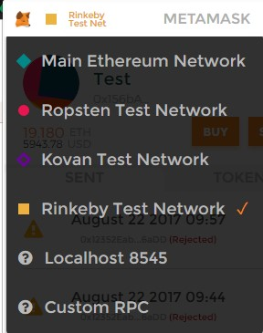

STR Setup Help |
|
Remarks:
======== • To test the STR transactions, Metamask must be installed first (steps mentioned below) • A webcam is required only if you want to strim video • The test transaction will only work on desktop browser versions during the alpha Setup testnet transactions: ====================== 1. install Metamask: [ Download Metamask for Chrome ] [ Download Metamask for Firefox ] 2. log into Metamask and create a new wallet 3. switch Metamask to use the Rinkeby testnet:  4. add Rinkeby ether to your wallet: [ Rinkeby Ether Faucet ] 5. create a new user on Strim and use the newly created wallet Note: ===== • If you have several wallets in Metamask, make sure to select the one configured in the Strim account • Unlock (log in) Metamask in order to access accounts in Strim |